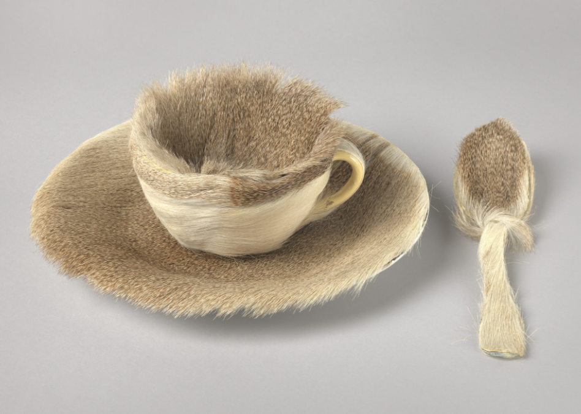
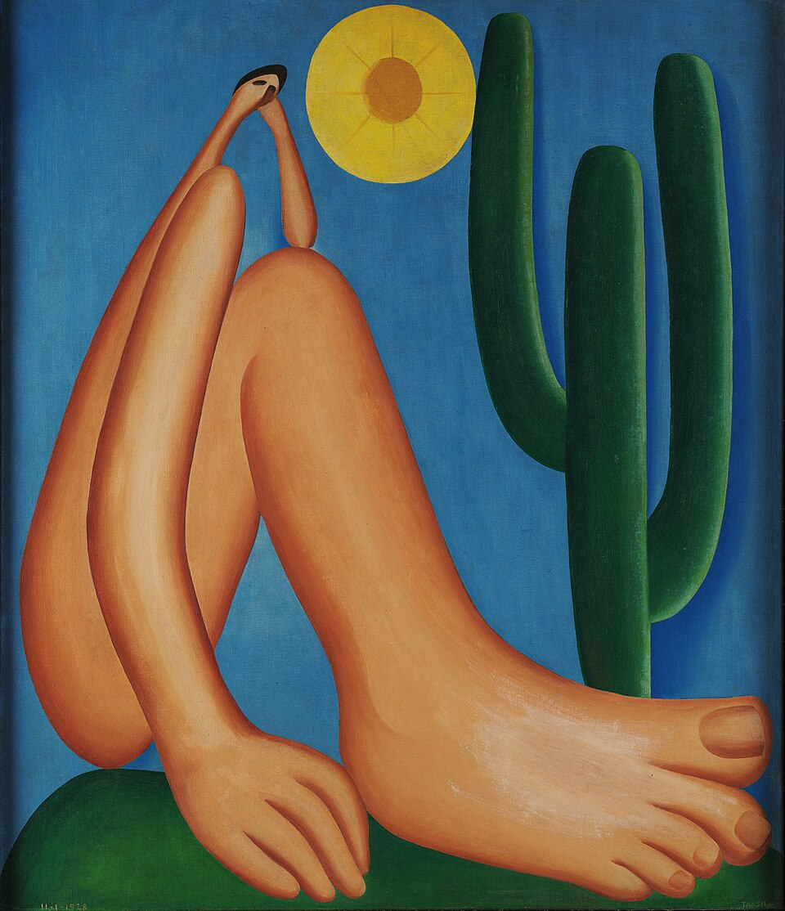
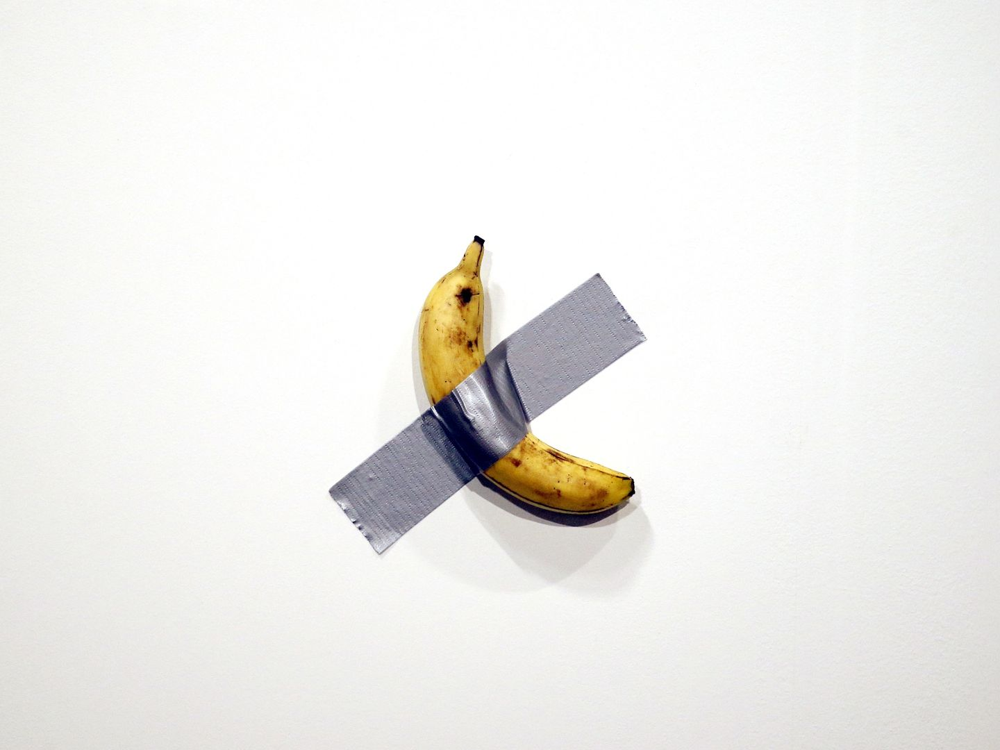
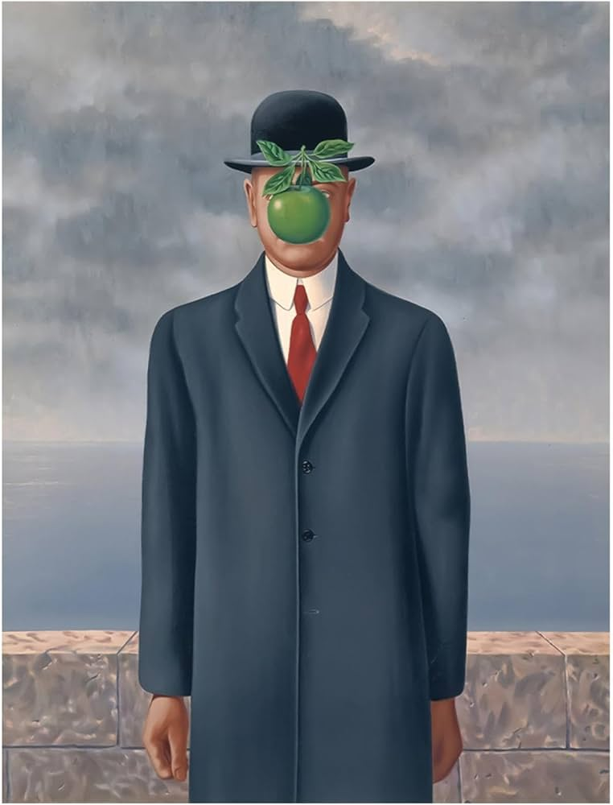
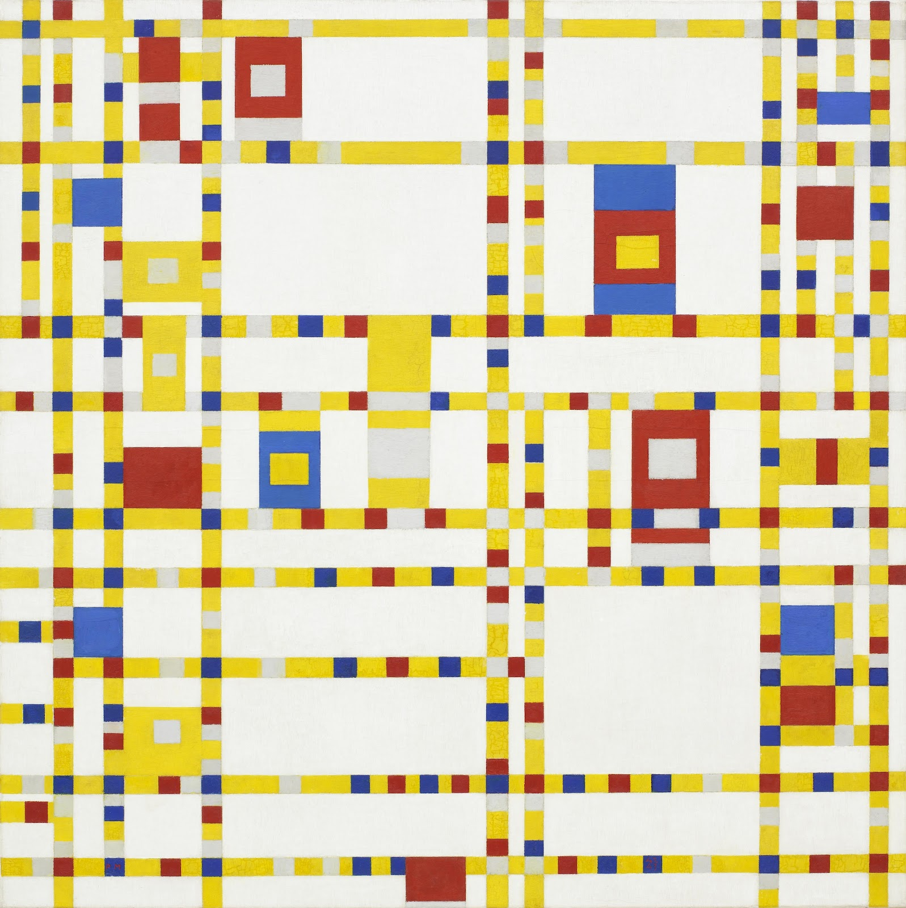

Ontdek mijn favoriete moderne kunst door afbeeldingen en uitleg.

Meret Oppenheim nam alledaagse voorwerpen, in dit geval een theekopje, schoteltje en lepel, en presenteerde ze op een volstrekt onverwachte manier. Ze was een van de weinige vrouwelijke surrealisten, een groep kunstenaars die de façade van de beschaafde samenleving wilden doorbreken. Hun werk was erop gericht de rede uit te dagen, remmingen bloot te leggen en kijkers in contact te brengen met hun onderbewustzijn, of ze daar nu klaar voor waren of niet.

De Braziliaanse kunstenares Tarsila do Amaral schilderde Abaporu in 1928 als cadeau voor haar echtgenoot, de schrijver Oswald de Andrade, waarmee ze de aanzet gaf tot de Braziliaanse Antropofagische Beweging. Het werk, dat elementen van het Europese modernisme combineert met krachtige symbolen van de Latijns-Amerikaanse identiteit, toont een langgerekte figuur onder een felle zon en roept thema's op van culturele transformatie en zelfdefinitie. Tegenwoordig wordt het beschouwd als een van de belangrijkste en meest invloedrijke werken in de Zuid-Amerikaanse kunstgeschiedenis.

De "banaan met ducttape" is het wereldberoemde en controversiële kunstwerk Comedian van de Italiaanse kunstenaar Maurizio Cattelan, in november 2024 voor ruim 6,2 miljoen dollar (5,9 miljoen euro) geveild. Het werk, dat bestaat uit een banaan die met ducttape aan de muur is geplakt, wordt gezien als een kritische knipoog naar de kunstmarkt en werd na de veiling door de koper opgegeten.

Het beroemde schilderij van René Magritte met de appel heet De Zoon des Mensen (Frans: Le fils de l'homme), geschilderd in 1964. Het toont een man met een bolhoed wiens gezicht grotendeels wordt bedekt door een zwevende groene appel.

De Nederlandse kunstenaar Piet Mondrian schilderde Broadway Boogie Woogie in 1942-1943. Hij gebruikte kleine vierkantjes in rood, blauw, geel en wit om een levendig raster te creëren dat lijkt te pulseren van beweging. Geïnspireerd door de straten van de stad en de gesyncopeerde jazzritmes, vertaalde Mondrian de energie van New York naar pure abstractie. Als zijn laatste voltooide werk valt het op door de brug te slaan tussen modernistische idealen van harmonie en de dynamiek van het dagelijkse stadsleven. De levendige, muzikale kwaliteit heeft het tot een van de meest gevierde schilderijen van de 20e eeuw gemaakt.